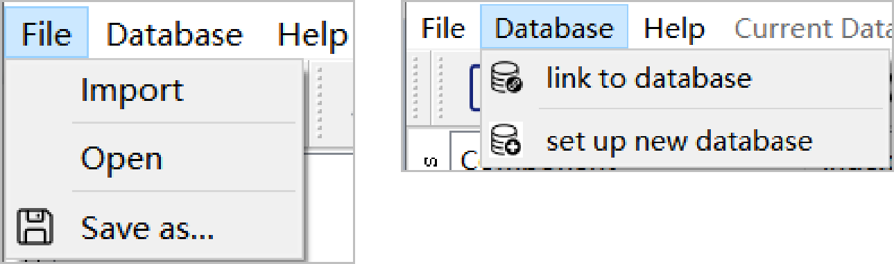
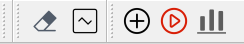
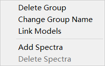

Menu & Toolbar
This chapter describes all the items in the menu and toolbar of EasyCID. It contains three part: Main Menu, Tollbar and Context Menu.
Main Menu
{kind=link}
Main menu is used for data importing, data saving, database creation and connection, which includes Import, Open, Save As, link to database, set up new database. Since the role of each button in EasyCID has been introduced in the Start chapter, here is only a brief introduction:
Import: This operation will create a table of database and then the spectra can be imported from the select folder into Components Window of Main Window.
Open: import the Raman spectra of unknown mixtures into Unknown Window of Main Window.
Save As: save the current forecast results as an EXCEL file.
link to database: link to an established database. Note that, only databases created through EasyCID can be successfully connected.
set up new database: create a database for storing and managing Raman spectral information.
Toolbar
{kind=link}
Toobar is used to perform some specific functions of EasyCID, which includes Clear plot area, Multiple plots, Train CNN models, Prediction, Quantitative analysis. Here is a brief introduction:
Clear plot area: click to clear all spectra plotted in the component plot area.
Multiple plot: click to keep the previously drawn spectra when drawing a new spectrum in the component plot area, and click again to return to the normal drawing state.
Train CNN models: click to pop up the Parameters Setting Window as the start of the training process.
Prediction: click to predict pure components of each selected unknown mixtures.
Quantitative analysis: click to pop up the Quantitative Analysis Window as the start of the quantitative Analysis process.
Context Menu
{kind=link}
Context menu is available in EasyCID as a right-click menu of Components in the Data information area. It is used to manage tables and spectra in the database, which includes Delete Table, Change Table Name, Add Spectra, Delete Spectra. Here is a brief introduction:
Delete Table: click to delete the selected table and all spectral information in it.
Change Table Name: click to change the name of the selected table in the pop-up window.
Link Models：click to load the local models.
Add Spectra: click to import the spectra from the specified folder into the selected table.
Delete Spectra: click to delete all information of the selected spectrum.